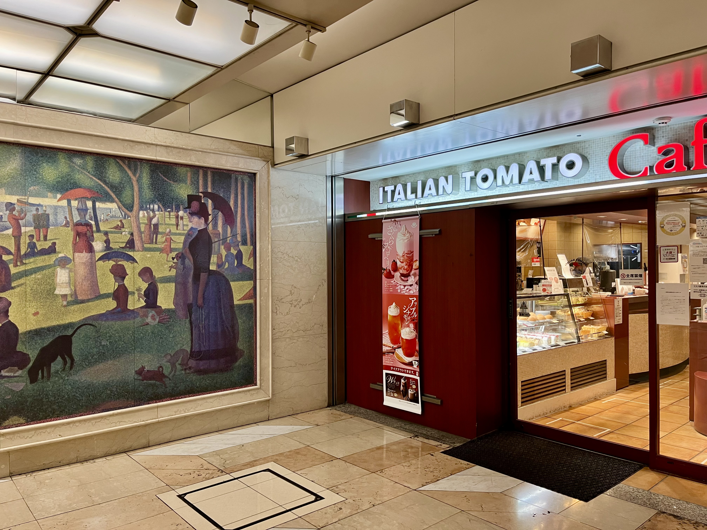
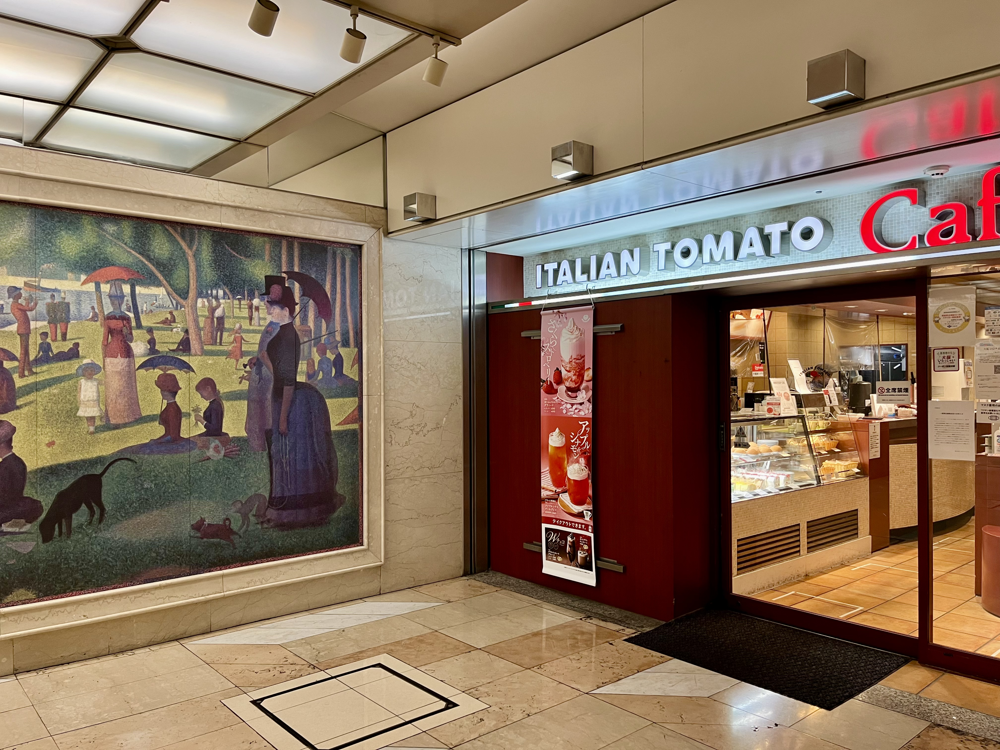

Before heading back home, I spent our final morning in Osaka strolling through the city's underground. Despite the early hour, the lack of activity made it eerily quiet. As I continued walking, I felt as though I could keep wandering through those tunnels forever. One particular highlight was the art gallery, where classical paintings hung in contrast to the fluorescent lights and metallic surroundings. Moving through the halls in silence, I felt a sense of calm that would have kept me there indefinitely if not for the impending flight home.